Chapter 15
The bishop pair
15.1 Introduction
In Chapter 12, we took a close look at the characteristics of a bishop. For instance, we ascertained that the fact that it can only control squares of one colour, can be an enormous handicap in certain positions. Earlier we showed that there are positions where the knight overpowers the bishop, due to the fact that the former can attack all the squares on the board. Although the bishop can cover long distances, in some situations it has to acknowledge the knight’s superiority.
If a player possesses two bishops, the shortcoming of ‘monochromity’ disappears. Rather, the opposite is now valid: the player who has the bishop pair often has an important advantage, since he can control all the squares of the board with his bishops. Whether the opposite side has a bishop and knight or two knights, in many cases they will be no match for the bishop pair. Therefore, Steinitz considered the possession of two bishops a mighty weapon.
In the following sections we will see how a player should put his two bishops into action, and in which types of position the bishop pair can be used optimally. Obviously, the characteristics of one bishop also hold for two bishops.
15.2 The bishop pair in the middlegame
If there is one piece that can suffer hindrance from its own pawns, it is the bishop. Of course, other pieces are generally also hindered by pawns that are in the way, but the queen, the rook and, especially, the knight are a little more agile than the bishop.
If its own pawns are fixed, the bishop’s activity is hampered in an unpleasant way. We shall see that the player who has the bishop pair must strive for open positions. Pawns that are in the way must be pushed forward (even if this means sacrificing them) in order to enable the bishop to do its job on an open diagonal. From Chapter 12, where the subject of diagonals was discussed, we know that the bishop is better placed at some distance from the actual battlefield. There, it will be less vulnerable, while it is still supporting the attack.
In short:
1) A bishop works well in a position with open diagonals
2) A bishop works excellently from a distance.
Now it is time to look at the types of position in which the two bishops can best exert their combined influence. We will look at the role of the bishop pair in different types of positions. There are pretty examples in chess literature where the bishop pair unleashes its devastating power on the enemy position. One of the most beautiful examples from chess history cannot be left out here:
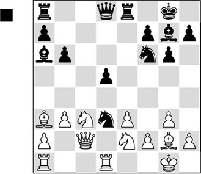
In this position Black came up with a fantastic combination.
1…♘xf2! 2.♔xf2 ♘g4+ 3.♔g1 ♘xe3 4.♕d2 ♘xg2!
A surprise. Of course, the white player had looked at the knight sacrifice on f2, but he had exclusively reckoned with 4…♘xd1 5.♖xd1, after which he correctly assessed White’s position as better. However, Fischer has a different objective. With his last move he has conquered the bishop pair, which will be strong in this open position. Furthermore, he has eliminated White’s most important defender. Now Byrne’s king position is severely weakened, and Black’s light-squared bishop reveals itself as a superman.
5.♔xg2
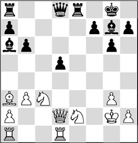
5…d4!
Bishops need open diagonals! Therefore Black does not care about one pawn more or less. The light squares especially play a crucial role, which is why Black rids himself of this pawn.
6.♘xd4
White has to capture, since otherwise one of his knights will be hanging.
6…♗b7+ 7.♔f1
A) After 7.♔g1 ♗xd4+ 8.♕xd4 ♖e1+! 9.♔f2 ♕xd4+ 10.♖xd4 ♖xa1, Black has gained an exchange. Fischer takes his analysis a little further after 11.♖d7; he enjoys showing how Black secures the spoils. There are several good moves here, but the following is by far the strongest: 11…♖c8! 12.♖xb7 ♖xc3 13.♖b8+ ♔g7 14.♗b2 ♖xa2;
B) 7.♔f2 ♕d7! (with this quiet move Black lends decisive power to his attack. Analogously to the game continuation, Black invades with his queen via the light squares) 8.♖ac1 (there is no good move left. 8.♘f3 also does not help in the least after 8…♕xd2+ 9.♘xd2 ♗xc3 10.♖ac1 ♗d4+ 11.♔f1, and now Fritz 11 gives the elegant 11…♗c8!, and Black wins. Now, 12.♔g2 fails to 12…♖e2+ 13.♔f3 ♖f2+ 14.♔e4 ♗g7, and the bishops reign supreme) 8…♕h3 9.♘f3 ♗h6! (it is nice to see the dark-squared bishop put its oar in from this square) 10.♕d3 ♗e3+ 11.♕xe3 ♖xe3 12.♔xe3.
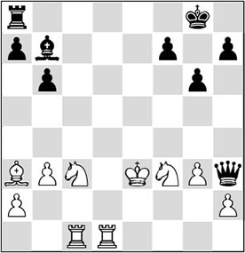
Analysis diagram
Materially speaking White appears to be OK, but after 12…♖e8+ 13.♔f2 ♕f5!, White can put the pieces back in the box.
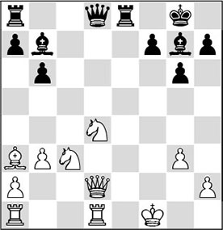
At this point, something remarkable happened. Two grandmasters, who were commenting on the games before an audience, thought that White had warded off the attack and that Black now had to resign. A little later they heard that one more move had been played and that the game had indeed been resigned – not by Black, but by White! The board boy was sent back to the playing hall twice, because no-one believed him.
7…♕d7!!
A wonderful final move, which ends all resistance. Byrne correctly calculated that he was lost after 8.♘db5 ♕h3+ 9.♔g1 ♗h6, and his position collapses. There is another, more important point in the position after 8.♕f2 ♕h3+ 9.♔g1.
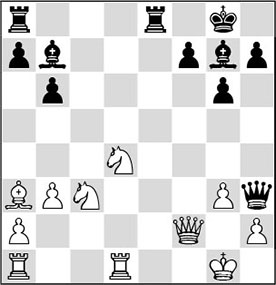
Analysis diagram
Now Black plays the magnificent 9…♖e1+!! and gains the point in an illustrative way after 10.♖xe1 ♗xd4. This was the variation Fischer had been hoping for.
In the following fragment, the bishop pair is put into action in another way.
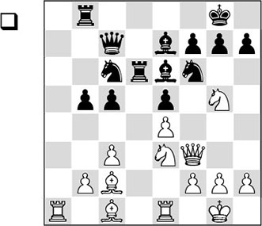
In this almost symmetrical position, White is better, since he has chances against the enemy king. His knights are well positioned, and it is time for the bishops to have their say.
1.♘f5!
Much better than 1.♘xe6, which is met by 1…fxe6!, with which Black keeps all the important squares in the centre under control. With the text move, White also conquers the bishop pair. Now the question arises which bishop Black should give up.
1…♗xf5?!
An interesting moment. Black does not make the correct decision. After a rook move, for example 1…♖d7, White can take the bishop pair in two ways. Let’s have a look:
A) With 2.♘xe6 he saddles Black up with a doubled pawn, which, however, controls some crucial central squares. This does not bring White any profit;
B) After 2.♘xe7+ ♖xe7, Black has got rid of his bad bishop, but White is slightly better here.
2.exf5!
Of course, White takes with the pawn, extending the diagonal of his light-squared bishop and making e4 the key square in his strategy.
2…h6 3.♘e4 ♘xe4 4.♗xe4 ♗f6 5.♗e3
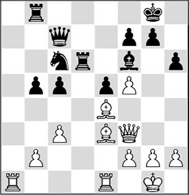
5…♘e7?!
This move is too passive, and gives White free rein. Black should have tried the more active 5…♘a5, even though White would then win a pawn after 6.♗xc5!? ♕xc5 7.b4 ♕c7 8.♖xa5 (not 8.bxa5 ♖a6!) 8…♖c8. The presence of opposite-coloured bishops gives Black chances to escape by the skin of his teeth.
6.b4!
Now that the bishops are beautifully positioned in the centre, White first directs his attention to the queenside. With this move he increases the range of action of his other bishop.
6…c4?!
The alternative 6…cxb4 7.cxb4 ♕c4 should have been preferred.
7.g3
White prepares h2-h4. It is time to open a second front for the attack. Premature would have been 7.g4, since after 7…♘c8 8.♕g3, Black would achieve a blockade on the dark squares with 8…♕d8.
7…♖d7
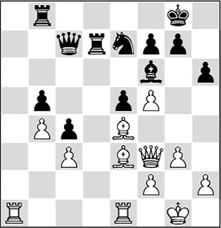
8.♖a7
A dubious decision at first sight. As a rule, the side that has more space should keep as many pieces on the board as possible. However, Rauzer has correctly understood that the black rook is an important defender of the king’s position, and therefore he trades it off.
8…♕d8 9.♖xd7 ♕xd7 10.h4
10.♖a1 also deserved attention.
10…♔h8?
A weak move, which renders the black position untenable in one blow. The only move seems to be 10…♖d8, but then White has a strong option in the manoeuvre ♖e1-a1-a7. Now events develop even more quickly.
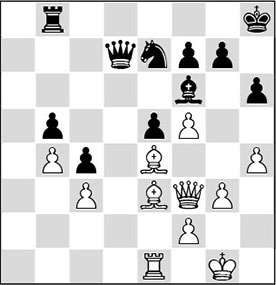
11.g4! ♘g8
In his calculations, Black had missed that here 11…♗xh4? is out of the question. After 12.♕h3! White can make clever use of the pin: 12…♗f6 13.g5, and Black loses a piece.
12.g5 ♗e7 13.♖d1 ♕c7
Hastening the end, although also after 13…♕c8 14.♕h5 there was not much hope for Black.
14.f6! ♗xf6
This amounts to capitulation, but 14…gxf6 would fail to 15.♕f5, with inevitable mate. There followed:
15.gxf6 ♘xf6 16.♗c2 ♖d8 17.♗xh6 ♖xd1+ 18.♗xd1 e4 19.♗f4 ♕d8 20.♕e2
Black resigned.
15.3. The bishop pair in the endgame
In the endgame, other rules apply than in the middlegame. This also goes for the use of the bishop pair.
In the previous examples, we have seen how the bishops were deployed for an attack on the enemy king. In the endgame we will have to look for another way to play. Before we study a few concrete examples, we will first go through things in a systematic way. For the sake of convenience, we will consider endgames where one side has the bishop pair, and the other side a bishop and a knight.
The side with the bishop pair has the advantage if:
1) there are pawns on two wings;
This is favourable since a bishop can more easily cover a greater distance.
2) the position has an open character;
More so than knights, bishops are hindered by pawns in the centre. In an open position they are not hampered.
3) all the rooks have been exchanged;
If the rooks are exchanged, the bishops will be able to penetrate deeply into the enemy position.
4) he can liquidate to a favourable ending.
The side with the two bishops can mostly determine to which favourable endgame he liquidates. There are three important types of endgame:
4a) a bishop versus knight endgame;
This can be a good choice if the pawns are fixed on a colour that favours the side with the bishop
4b) a pawn endgame;
4c) an endgame with opposite-coloured bishops.
In the latter case it is important that the king has squares at its disposal via which it can enter the enemy position.
It would take us too far to show examples of all these types of liquidation, but the study of the following examples will make clear that the various liquidations continuously play an important role. Here are two characteristic, masterfully played endgames:
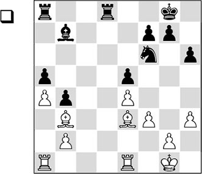
In this endgame, White has several important advantages:
From the above we can conclude that White’s plan will consist of using his dark-squared bishop in particular, by aiming at the pawns on the queenside.
1.♖ed1
First White must dispute the open d-file. After the immediate 1.♗b6, Black would obtain counterplay with 1…♖d3. Besides this, as we have seen, White will want to trade off all the rooks in the future.
1…♗c6
It is not easy for Black to make up a sensible plan. However, he probably worsens his position with this move. Perhaps 1…♔f8 was slightly more logical.
2.♖ac1 ♗e8 3.♔f2
White takes his time. First he brings his king to the centre, which Black cannot imitate in these circumstances.
3…♖xd1
The rook exchange favours White, as we know, but the call for counterplay is so strong that Black decides to go for this disadvantageous swap.
4.♖xd1 ♖c8
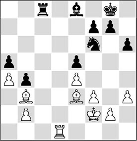
5.g4!
An interesting moment. It looks as if White can now collect material with 5.♗b6, but then he would run up against the unpleasant retort 5…♘d7 6.♗xa5 ♘c5!.
Instead, Capablanca concludes that Black is completely passive at this point, and that only his knight prevents his immediate downfall. If the knight has to move, ♖d5 will be immediately decisive – hence the text move. The intention is to gain space on the kingside and chase the knight away.
Incidentally, 5.♖d6 was another promising option, although Black could in that case fight back with 5…♗d7, intending to exchange the light-squared bishop at the right moment with …♗e6!.
5…♗d7
Black cannot just sit and wait aimlessly, but now he must allow the other threat to be executed.
6.♗b6 ♗e6 7.♗xe6 fxe6
At the cost of new weaknesses, Vidmar has got rid of the white bishop pair. Now White liquidates to an ending where his bishop will prevail over the knight.
Incidentally, the intermediate check 7…♖c2+ wouldn’t have made any difference, since after 8.♔e3 fxe6 9.♖d2, White wins as well.
8.♖d8+!
This is one of those moments where White must convert the advantage he has obtained with his bishop pair into another advantage. He exchanges the rooks, so as not to allow Black any counterplay, and attacks Black’s unattended pawns on the queenside with his bishop.
8…♖xd8 9.♗xd8 ♘d7 10.♗xa5 ♘c5
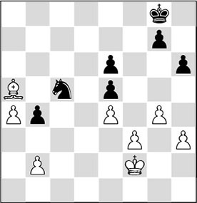
11.b3!
How many players wouldn’t have failed at the very last minute here? Capablanca spots in time that he should not play 11.♗xb4? in view of 11…♘d3+. After this last accurate move, the game is over.
11…♘xb3 12.♗xb4 ♘d4 13.a5
Black is helpless against the strong a-pawn, so he resigned.
From Steinitz, on whose ideas this book is to a large extent based, I have also found a fragment in which he converts the advantage of the bishop pair to a win in exemplary fashion.
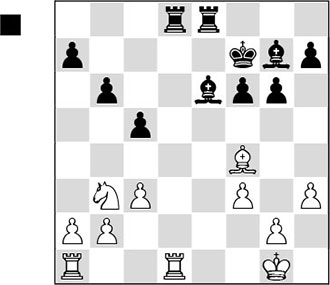
When we study this position, we see the following:
These factors mean that Black is clearly better, if not winning here. His plan consists of the following stages:
Stage I: By putting his pawns on dark squares, he restricts the mobility of the white bishop, which was reasonably active until now. This has already taken place on the queenside (pawns on a7, b6 and c5), and on the kingside Black will strive for a set-up with pawns on h6, g5 and f4.
Stage II: At a convenient moment Black will exchange a rook – preferably two.
Stage III: By means of an action on the queenside with …a7-a5-a4 he threatens to attack the white pawn formation – especially the strong point c3. White will then be forced to play ♘b3-c1, followed by a2-a3, creating even more weaknesses on the light squares.
Stage IV: Black can then dominate the knight with …♗e6-c4 and (after a double rook exchange) prepare a possible king march to the queenside. He also has the breaking possibility of …b6-b5-b4, with which he can extend the diagonals for his bishops.
On the basis of the above, it is not so hard to find Black’s next move.
1…g5! 2.♖xd8
This plays into Black’s hands, but the immediate 2.♗e3 was obviously impossible.
2…♖xd8 3.♗e3 h6!
Black prepares to march with his f-pawn, to increase his space advantage.
4.♖e1 f5
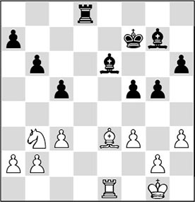
5.f4?
An understandable mistake: White does not want to allow …f5-f4, but the cure is worse than the disease. Now that he has given up the e4-square (a light square!), this will cause big problems for him later on.
5…♗f6 6.g3 a5!
Here is the thematic march.
7.♘c1 a4 8.a3
The light squares are getting to be more and more important for Black.
8…♗c4
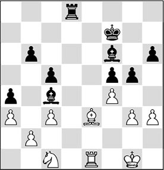
9.♔f2
So far the winning process has followed the above-mentioned scheme. For the time being, Black is not able to force a rook exchange, and he should now have continued with the logical 9…♖d5!. Then he could have followed up with a march of the b-pawn, which, after …b6-b5-b4, would lead to a ‘corrosion’ of the white pawn formation. This in turn would lead to a passed a-pawn, which would then have to force the decision.
Steinitz has his own solution to the problem of this position, and decides to give up his bishop pair in order to conquer the invasion square d2 for his rook. In modern practice, a grandmaster would doubtlessly have opted for the other solution, mentioned above.
9…gxf4?! 10.♗xf4 ♗g5
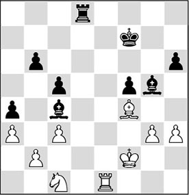
11.♗xg5
The alternative 11.♔e3 is refuted by 11…♖e8+ 12.♔f2 ♗xf4 (in case of 12…♖xe1 13.♔xe1 ♗xf4 14.gxf4, the ending that arises after 14…♔e6 15.♘e2 ♗xe2 16.♔xe2 ♔d5 17.♔d3 b5 18.h4 h5 19.♔e3 ♔c4 20.♔d2 ♔b3 21.♔c1 b4 22.axb4 cxb4 23.cxb4 ♔xb4 24.♔b1 (not 24.♔c2 on account of 24…♔c4 25.♔d2 ♔d4 and Black wins) 24…♔b3 25.♔a1 a3
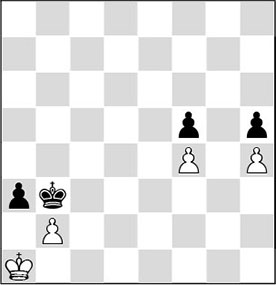
Analysis diagram
is a draw in view of White’s amazing reply 26.♔b1!!, and the best that Black can do is give stalemate) 13.gxf4 ♖d8! 14.♔e3 ♔g6, and Black slowly but surely makes progress.
11…hxg5 12.♔e3 ♔f6 13.h4
White creates an ‘outside passed pawn’, which would be to his favour in a pawn ending in particular. However, it will not do him any good, since he will not be able to save the game due to several other circumstances.
13…gxh4 14.gxh4 ♖e8+ 15.♔f2 ♖xe1 16.♔xe1
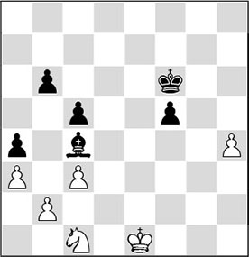
16…♔e5!
Quite paradoxically, the black king moves through the centre, apparently not paying attention to the outside passed pawn.
17.♘e2
Finally the pathetic knight tries to join the game. But the fun is short-lived.
17…♗xe2!
No dogmas for Steinitz! Black has calculated accurately that he will win the pawn ending. This is slightly surprising, since White has the outside passed pawn. But the fact that the white king is too far from the centre brings Black the win.
18.♔xe2
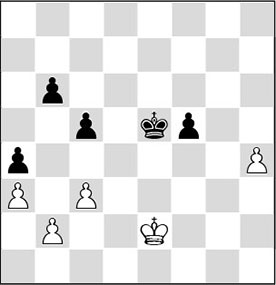
18…♔f4!
The only route is along the front of the pawn.
19.c4 ♔g4 20.♔e3 f4+
Black cannot overindulge in the white h-pawn, as in that case he would be counted out with 21.♔f4!.
21.♔e4 f3 22.♔e3 ♔g3
White resigned.
In this last example, we saw that the bishop pair can also operate well in a fairly closed position. Playing over the following game, we will encounter all the specific factors that play a role in such cases.
1.♘f3 ♘f6 2.c4 c5 3.♘c3 ♘c6 4.d4 cxd4 5.♘xd4 ♘xd4 6.♕xd4 g6 7.e4 ♗g7 8.♗e3 d6 9.f3 0-0 10.♕d2 ♗e6 11.♖c1 ♕a5
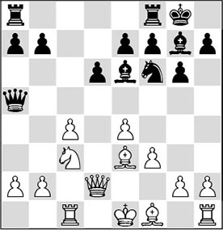
12.♘d5
White liquidates to a queenless middlegame, which will soon result in an ending.
12…♕xd2+ 13.♔xd2 ♗xd5
Black must part with the bishop pair, since 13…♘xd5 14.cxd5 ♗d7 15.♖c7 would cost a pawn.
14.cxd5 ♖fc8 15.♗e2 a6
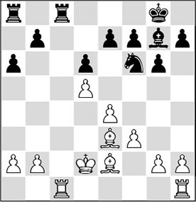
16.b4!
White has several advantages here:
16…♔f8
The black player tries to stay on his feet without allowing any weaknesses. Judging by the further course of the game, 16…e6 would have been a better option. After 17.dxe6 fxe6, White has the added advantage of having fewer pawn islands, but it must be admitted that Black has counterplay.
17.a4
In other fragments we have seen that the side with the bishop pair should make optimum use of it. White pushes his a-pawn in order to fix the pawn structure. In the distant future, a passed white rook pawn will be a potential danger for the side with the knight.
17…♘d7 18.a5 ♗b2 19.♖c2 ♖xc2+ 20.♔xc2 ♗g7 21.♔b3 ♖c8
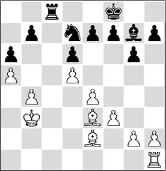
With a trick, Black has conquered the only open file, because White is not – yet – prepared to exchange the second pair of rooks. However, the black player will not derive much fun from his open file, as White is not going to let him enter anywhere.
22.♗d2
Since in other examples we have seen that exchanging all the rooks mostly favours the side with the bishop pair, we might ask why White does not try to swap the remaining rook pair here. In this case the position has a closed character due to the fact that both players still have seven pawns each left. Although his position is cramped, Black has no real weaknesses. With the rooks still on the board, White can try to open a second file, and thereby create a target.
22…♗d4 23.g4 ♔g7 24.g5!
Black gets tied up further and further.
24…♖c7
At this point, 24…e6 25.dxe6 fxe6 26.f4 would have been no picnic either for Black.
25.♖d1 ♔f8 26.f4 ♗g7 27.♗g4 ♔e8
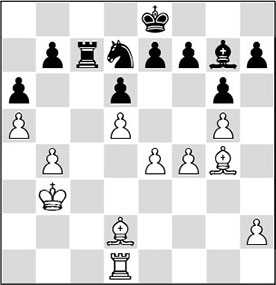
28.♖f1
The white plan is starting to take shape. Please note that thanks to his space advantage, the white rook has much more to say than the black one, even though the latter is standing on the only open file.
28…♗d4 29.h4
The ‘strangling process’ continues.
29…♗g7 30.h5 ♗d4 31.♖h1 ♗g7 32.♖h3 ♔f8
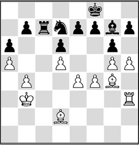
An interesting moment. How should White make progress? Of course he can open the h-file at any moment with hxg6. But the question is: what good will it bring him? Polugaevsky has a flash of genius.
33.h6!
Oddly enough, White closes the h-file and in doing so, maintains the closed character of the position. However, Polugaevsky is planning to open another file later, and then he wants to make use of the far advanced pawn on h6. This pawn can be of great importance if White manages to attack the pawn on h7.
33…♗d4 34.♖d3!
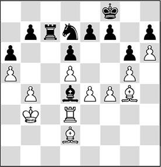
A vital link in the winning plan. The black bishop is ideally placed on d4, but now it is forced to declare its intentions.
34…♗a7
Shouldn’t the bishop have stayed on the a1-h8 diagonal on principle? In order to arm himself against White’s idea of opening the e-file and then attacking the h7-pawn, the bishop should indeed have been kept on the long diagonal. But then White has another instructive idea to make progress. After, for instance, 34…♗h8, he would suddenly liquidate to a rook ending with 35.♗xd7 ♖xd7 36.♗c3 ♗xc3 (36…f6 is probably not the solution either) 37.♖xc3 ♔e8, and Black has to wait in complete passivity for White to convert his advantage to a win.
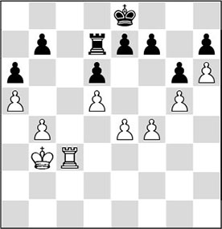
Analysis diagram
For example: 38.b5! ♔d8 (after 38…axb5 39.♖c8+ ♖d8 40.♖xd8+ ♔xd8 41.♔b4 ♔d7 42.♔xb5 ♔c7 43.e5, White wins the pawn ending) 39.b6 ♔e8 (or 39…e6 40.dxe6 fxe6 41.f5, and because White can work with ♖c7, he will win the ensuing pawn ending by means of a breakthrough) 40.f5, and White wins.
35.♗h3 ♗g1 36.♗c3!
Everything according to plan. The bishop takes possession of the long diagonal, closes the c-file and supports the long-prepared action e4-e5. Later, the bishop will play an important role on this square, since via the f6-square it can lend the white rook a helping hand to enter the black position.
36…♔e8
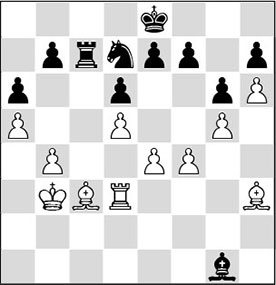
37.e5
Now White does not have to linger any longer. The second file can be opened!
37…♗h2 38.exd6 exd6 39.♖e3+ ♔d8 40.♖e4 ♗g1
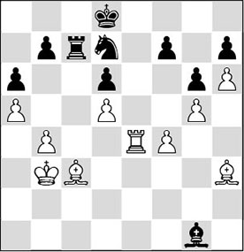
It’s impressive how the white bishops have taken control of the position. Polugaevsky now finally decides to say goodbye to his mighty bishop pair:
41.♗xd7!
And Black resigned. After 41…♖xd7 42.♗f6+, he cannot prevent the white rook from entering the back rank and conquering the pawn on h7. A good technical performance by Polugaevsky.
Exercises
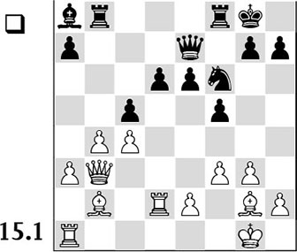
The following interesting move sequence appeared on the board: 19.♕e3 f4 20.♕d3 fxg3 21.hxg3 ♖fd8 22.♕e3 cxb4 23.axb4 ♖xb4 24.♖xa7 ♖b7 25.♖a6 ♖c7 26.♗h3 e5 27.♗a3 ♘e8.
Now answer the following questions:
a) Who is better in the diagram position and what is the verdict after the moves played?
b) Analyse the above move sequence and indicate at which points good and/or bad moves were played.
c) What is the best move for White to play (after Black’s 27th move)? Give a reason for your answer.
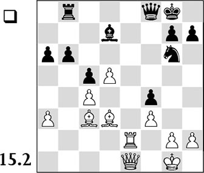
White’s position is superior, but he has to find a way to make progress. How can he go about this?
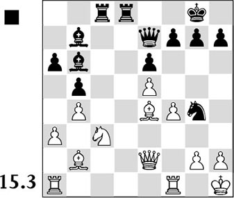
Black has two beautiful bishops aimed at the white king position, but with his last move, 21.♗e4, White appears to have averted the main threats. Now Black played 21…♕h4, and he was confronted with the reply 22.g3. Thereupon he devised a brilliant combination, in which his bishop pair fulfils the starring role. Do you see with which move he should start? Work out a few important variations.
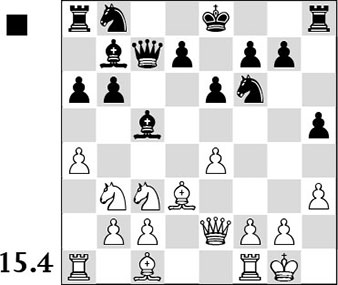
Black has chosen a sharp set-up, but with his last move 11.♘b3 White wants to either drive back or eliminate the strong black bishop. Can Black make use of his beautifully placed bishops nonetheless with a swift action? Think of the h-file.